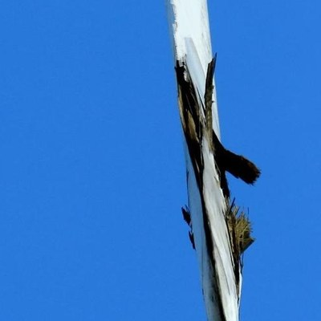
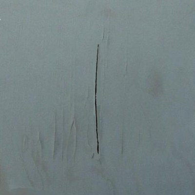
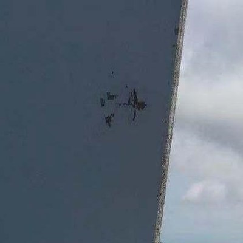
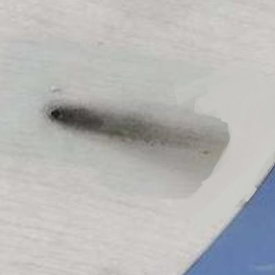

A blade is flagged as damaged. Two decisions follow: the defect type decides which repair team goes, and the severity (1–5) decides how soon.
Leak-free split. Neighbouring frames can be near-duplicates, so images were grouped first (361 groups) and whole groups were split: 747 train / 159 val / 159 test. No near-copy of a test image is seen in training.
Severity labels are my own rule, not an industry standard: a base level per type (surface 1, erosion 2, craze 3, crack 4, delamination 4, lightning 5), +1 if the damage box covers ≥ 8% of the image, −1 if ≤ 0.5%.




Cropped around the annotated damage. Labels are the dataset's.
Severity level = 1 + number of "yes" answers. Asking "is it worse than k?" keeps the order of the levels, so being off by one costs less than being off by three.
Loss = focal + 0.5 · Smooth L1 + 0.5 · ordinal BCE. AdamW (lr 3e-4, wd 1e-4), cosine LR, 12 epochs, batch 16, seed 42, on a 4 GB RTX 3050. Best epoch chosen on validation; test set used once.
> python inference/predict_single.py --image 4.jpg Inferred Defect : CRACK Class Confidence : 89.53% Severity Level : LEVEL 5 (score 4.79 / 5) Ordinal Probabilities: P(Severity > Level 1) = 99.7% yes P(Severity > Level 2) = 99.6% yes P(Severity > Level 3) = 99.3% yes P(Severity > Level 4) = 78.4% yes → 1 + 4 = 5
Also a Streamlit page: pick or upload any image, see all 6 probabilities and the 4 ordinal answers.
Each queue is ordered by predicted severity, then arrival. Routing and ordering are fixed rules on the model output; nothing here is learned.
| Model | Accuracy | Macro-F1 |
|---|---|---|
| SVM, hand-made features | 35.85% | 33.22% |
| A ResNet50 | 93.71% | 93.14% |
| B A + CBAM | 94.34% | 93.75% |
| C B + focal + severity | 92.45% | 91.61% |
Exactly right 71.1% of the time vs 58.5% for the true-type lookup. It beats a lookup that already knows the type, so it is reading damage size from the image.